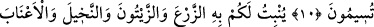

SAYISIZ NÎMETLER
10. Gökten suyu indiren O’dur. Ondan hem size içecek vardır, hem de
hayvanlarınızı otlatacağınız bitkiler.
11. (Allah) su sâyesinde sizin için ekinler, zeytinler, hurmalar, üzümler ve diğer
meyvelerin hepsinden bitirir. İşte bunlarda düşünen bir toplum için büyük bir ibret
vardır.
12. O, geceyi, gündüzü, güneşi ve ayı sizin hizmetinize verdi. Yıldızlar da
Allah’ın emri ile hareket ederler. Şüphesiz ki bunlarda aklını kullananlar için pek
çok deliller vardır.
13. Yeryüzünde sizin için rengârenk yarattıklarında da öğüt alan bir toplum için
gerçek bir ibret vardır.
14. İçinden taze et (balık) yemeniz ve takacağınız bir süs (eşyası) çıkarmanız için
denizi emrinize veren O’dur. Gemilerin denizde (suları) yara yara gittiklerini de
görürsün. (Bütün bunlar) onun lütfunu aramanız ve nîmetine şükretmeniz içindir.
15. Sizi sarsmaması için yeryüzünde sağlam dağları, ırmakları ve yolunuzu
bulmanız için de yolları yarattı.
16. Daha nice alâmetler (yarattı). Onlar, yıldızlarla da yollarını doğrulturlar.
17. O halde, yaratan (Allah), yaratmayan (putlar) gibi olur mu? Hâla
düşünmüyor musunuz?